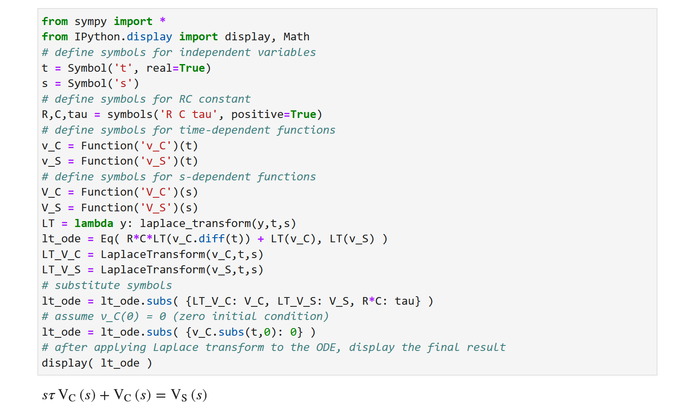
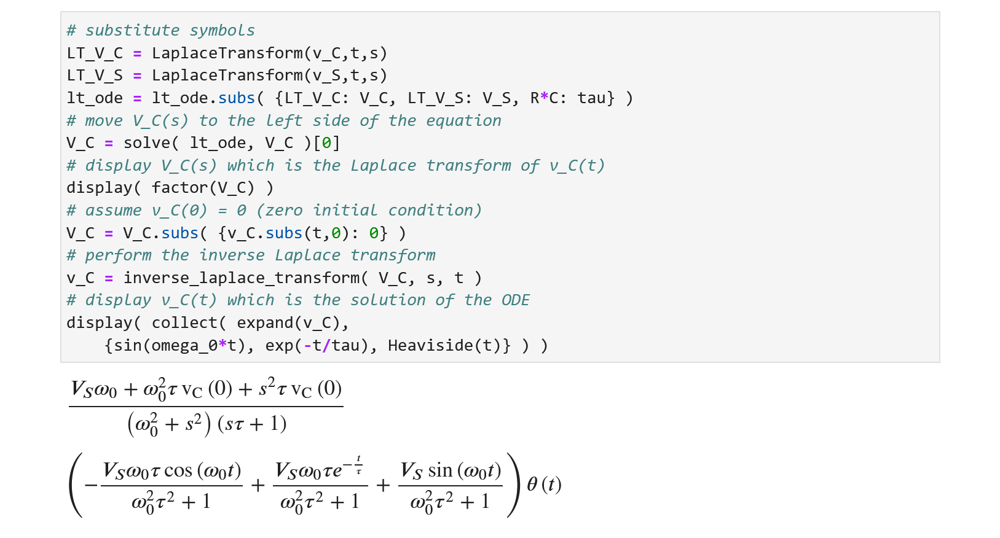

การหาผลเฉลยของสมการเชิงอนุพันธ์สามัญด้วยวิธีการแปลงลาปลาซและเขียนโค้ด Python#
บทความนี้กล่าวถึง ตัวอย่างการเขียนโค้ด Python เพื่อหาผลเฉลยของสมการเชิงอนุพันธ์สามัญด้วยวิธีการแปลงลาปลาซ
Keywords: Python, SymPy, Ordinary Differential Equations, ODE Solving, Symbolic Methods, Laplace Transforms, RC Circuit
▷ สมการเชิงอนุพันธ์สามัญและการหาผลเฉลย#
การวิเคราะห์วงจรไฟฟ้าพื้นฐานที่ประกอบด้วยตัวต้านทาน (Resistor: R) ตัวเก็บประจุ (Capacitor: C) ตัวเหนี่ยวนำไฟฟ้า (Inductor: L) ซึ่งเรามักจะเรียกวงจรประเภทนี้ว่า วงจร RLC
สำหรับวงจรประเภทนี้ ซึ่งถือว่าเป็นวงจรประเภทเชิงเส้น เราสามารถใช้สมการเชิงอนุพันธ์สามัญ (ODE) เพื่อสร้างแบบจำลองทางคณิตศาสตร์ สามารถอธิบายพฤติกรรมของวงจรไฟฟ้า หรือวิเคราะห์ดูการเปลี่ยนแปลงของปริมาณไฟฟ้าในเชิงเวลาได้ (Transient Analysis) เช่น แรงดันไฟฟ้าหรือกระแสไฟฟ้าในวงจร
ถ้าต้องการหาผลเฉลยของสมการเชิงอนุพันธ์สามัญที่มีคุณสมบัติต่อไปนี้ เราสามารถใช้วิธีที่เรียกว่า "การแปลงลาปลาซ" (Laplace Transform) ในการหาผลเฉลยได้
- สมการเชิงอนุพันธ์สามัญนั้นเป็นแบบเชิงเส้นและมีสัมประสิทธิ์คงตัว (Linear ODE with Constant Coefficients)
- มีการกำหนดเงื่อนไขเริ่มต้น (Initial Conditions) สำหรับฟังก์ชันที่ใช้เป็นผลเฉลยของสมการ ODE
- ฟังก์ชันเจาะจงในสมการเชิงอนุพันธ์สามัญนั้นเป็นฟังก์ชันที่สามารถหาผลการแปลงลาปลาซได้ เช่น ฟังก์ชันที่เป็นค่าคงที่ ฟังก์ชันขั้นบันได ฟังก์ชันเลขชี้กำลัง-เอกซ์โพเนนเชียล ฟังก์ชันไซน์หรือและโคไซน์ เป็นต้น
ฟังก์ชันและอนุพันธ์ของฟังก์ชัน (Derivatives) ในโดเมนของตัวแปร จะถูกแปลงให้อยู่ในรูปของฟังก์ชันในโดเมน โดยทั่วไปแล้วจะอยู่ในรูปของเศษส่วนพหุนาม (Rational Polynomials) ของตัวแปร จากนั้นจึงสามารถใช้เทคนิคต่าง ๆ ทางพีชคณิต (Algebraic Manipulation) กับผลการแปลงลาปลาซดังกล่าว แล้วนำไปหาผลการแปลงลาปลาซผกผัน (Inverse Laplace Transform) เพื่อให้ได้ฟังก์ชันที่เป็นผลเฉลยในโดเมน
ลองมาดูตัวอย่าง สมการเชิงอนุพันธ์สามัญอันดับที่ และเป็นไปตามข้อ 1
- เป็นค่าคงที่
- เป็นตัวแปรอิสระ (Independent Variable) หมายถึง เวลา (Time)
- เป็นฟังก์ชันที่ขึ้นอยู่กับตัวแปร และเป็นผลเฉลยของ ODE หมายถึง ปริมาณทางไฟฟ้าในวงจร
- , ..., เป็นอนุพันธ์อันดับที่ 1 ถึง ของฟังก์ชัน ตามลำดับ
- เป็นฟังก์ชันที่ขึ้นอยู่กับตัวแปร ตามรูปแบบของแหล่งจ่ายในวงจร และสามารถหาผลการแปลงลาปลาซได้
และปัญหานี้มีเงื่อนไขเริ่มต้นสำหรับ ตามข้อ 2 ดังนี้
▷ การแปลงลาปลาซด้านเดียว#
การแปลงลาปลาซของฟังก์ชันที่มีตัวแปรอิสระ เป็นการดำเนินการทางคณิตศาสตร์ โดยอาศัยการอินทิเกรต และได้ผลลัพธ์จากการหาอินทิกรัลเป็นฟังก์ชันที่มีตัวแปรอิสระ (เป็นตัวแปรเชิงซ้อน) สำหรับช่วงเวลาตั้งแต่ ไปจนถึง ดังนี้
หรือกล่าวได้ว่า ฟังก์ชัน และ เป็นคู่ของการแปลงลาปลาซ (Laplace Transform Pair)
การหาผลการแปลงลาปลาซในรูปแบบนี้ เป็นแบบด้านเดียว (One-sided Laplace Transform) ซึ่งหมายถึง ช่วงเวลาตั้งแต่ เป็นต้นไป
ถ้าให้ ซึ่งเป็นฟังก์ชันที่ให้ค่าคงที่เท่ากับ 1 สำหรับค่าใด ๆ ของตัวแปร ผลการแปลงลาปลาซด้านเดียวของฟังก์ชันนี้ สามารถคำนวณได้ดังนี้
จากตัวอย่างการคำนวณ ถ้ากำหนดขอบเขตของการลู่เข้า (Region of Convergence: ROC) สำหรับตัวแปร s เช่น ถ้าให้ส่วนที่เป็นจำนวนจริงของตัวแปร หรือ มีค่ามากกว่า 0 ก็จะทำให้สามารถหาค่าลิมิตได้ในกรณีที่
ฟังก์ชัน ที่มีลักษณะเป็นขั้นบันไดหนึ่งหน่วย (Unit-step Function) หรือเรียกว่า ฟังก์ชันเฮฟวีไซด์ (Heaviside Function) มีค่าแบ่งเป็นช่วงดังนี้
ผลการแปลงลาปลาซด้านเดียวของฟังก์ชัน ให้ผลเหมือนกับกรณี
ถ้าให้ เป็นฟังก์ชันเอกซ์โพเนนเชียล (Exponential Function) และให้ เป็นค่าคงที่ ผลการแปลงลาปลาซด้านเดียวสามารถคำนวณได้ดังนี้
ลองมาดูตัวอย่างของคู่การแปลงลาปลาซสำหรับฟังก์ชันพื้นฐานทางคณิตศาสตร์ที่พบเห็นได้บ่อย โดยกำหนดให้ และ เป็นค่าคงที่ใด ๆ และ เป็นค่าคงที่และเป็นจำนวนจริงที่เป็นบวก
| f(t) | F(s) | Description |
|---|---|---|
| Dirac (unit-impulse) function | ||
| constant function | ||
| Heaviside (unit-step) function | ||
| Pulse function | ||
| Exponential function | ||
| Sine function | ||
| Cosine function | ||
| Exponentially damped sine | ||
| Exponentially damped cosine | ||
| Ramp function | ||
| Linearity property | ||
| Shifting in s domain | ||
| The first derivative of | ||
| The second derivative of | ||
| The -th derivative of |
โดยทั่วไปแล้ว ตารางของคู่การแปลงลาปลาซ และคุณสมบัติต่าง ๆ ของการแปลงลาปลาซ มีประโยชน์และช่วยให้ง่ายขึ้นเมื่อต้องการหาผลการแปลงลาปลาซ และการแปลงลาปลาซผกผัน
▷ การเขียนโค้ด Python: การอนุพันธ์และอินทิกรัลสำหรับฟังก์ชัน#
ลองมาดูการเขียนโค้ด Python สำหรับ SymPy (v1.10.0+) ตรวจสอบเวอร์ชันของ SymPy โดยทำคำสั่งต่อไปนี้
import sympy
print(sympy.__version__)
SymPy มีคำสั่ง sympy.diff() และ sympy.integrate() เพื่อคำนวณหาอนุพันธ์ (Derivative) และการหาปริพันธ์หรืออินทิกรัลแบบไม่จำกัดเขต (Indefinite Integral)
ลองพิจารณาฟังก์ชัน เช่น และ แล้วหาอนุพันธ์ และปริพันธ์ของฟังก์ชันเหล่านี้
from sympy import *
from IPython.display import display
# define 't' as a symbol
t = Symbol('t')
# define a symbol for function f(t)
f = symbols('f', cls = Function)
# define 'a' (non-zero) as a symbol
a = Symbol( 'a', nonzero=True )
# f is an exponential function
f = exp(-a*t)
# compute the integral of f(t)
display( integrate( f, t ) )
# compute the first derivative of f(t)
display( diff( f, t) )
# define 'w' (positive) as a symbol
w = Symbol( 'omega', positive=True )
# f is a sine function
f = sin(w*t)
# compute the integral of f(t)
display( integrate( f, t ) )
# compute the first and second derivatives of f(t)
for i in range(1,3):
display( diff(f, t, i) )
หากต้องการทดสอบการทำงานของโค้ดตัวอย่าง และแสดงผลลัพธ์ที่ได้ที่เป็นข้อความทางคณิตศาสตร์
ก็สามารถใช้ JupyterLab ผ่านหน้าเว็บเบราว์เซอร์ได้ (ติดตั้งใช้งานด้วยคำสั่ง เช่น pip install jupyterlab)
รูป: การใช้งาน JupyterLab
รูป: เอาต์พุตสำหรับโค้ดตัวอย่างเมื่อรันโค้ดด้วย JupyterLab
ฟังก์ชันขั้นบันไดหนึ่งหน่วย (Unit-Step Function) หรือ "ฟังก์ชันเฮฟวิไซด์" (Heaviside Function) ซึ่งใช้สัญลักษณ์ และ "ฟังก์ชันดิแรกเดลตา" (Dirac-Delta Function) ซึ่งใช้สัญลักษณ์ ถือว่ามีความสำคัญในการวิเคราะห์ระบบและวงจรไฟฟ้า ลองมาทบทวนคุณสมบัติของฟังก์ชันดังนี้
ในโค้ดตัวอย่างจะเห็นได้ว่า คำสั่งสำหรับการใช้ฟังก์ชัน คือ DiracDelta()
และคำสั่ง Heaviside()
สำหรับฟังก์ชันเฮฟวิไซด์ นอกจากนั้นยังมีตัวอย่างการใช้คำสั่ง Piecewise()
เพื่อสร้างฟังก์ชันที่ให้ค่าแบ่งเป็นช่วง
การหาอนุพันธ์ของฟังก์ชัน จะได้ฟังก์ชัน เป็นผลลัพธ์
แต่ถ้าอินทิเกรต สำหรับ จะได้เท่ากับ
(ในการเขียนโค้ดด้วย SymPy ถ้าใช้สัญลักษณ์ sym.oo จะหมายถึง ค่าอนันต์ )
from sympy import *
from IPython.display import display
# define a symbol for variable 't'
t = Symbol('t')
# display the Heaviside function
display( Heaviside(t) )
# compute the value of the Heaviside function at t=0
print( Heaviside(0) )
# integrate the Heaviside function
display( integrate( Heaviside(t) ) )
# find the derivative of the Heaviside function
display( diff(Heaviside(t),t ) )
# rewrite Heaviside function as a piecewise function
display( Heaviside(t).rewrite(Piecewise) )
a = Symbol( 'a', nonzero=True )
display( limit( integrate( DiracDelta(t),(t,-a,a)), a,oo) )
# define 'a' as a nonzero symbol
a = Symbol( 'a', nonzero=True )
# integrate the dirac-delta function for t=(-inf,+inf)
display( limit( integrate( DiracDelta(t),(t,-a,a)), a,oo) )
# define f as a piecewise function
f = Piecewise( (1,t>0), (0,t<0), (1/2,True) )
display( f )
รูป: เอาต์พุตเมื่อรันโค้ดตัวอย่าง
▷ การเขียนโค้ด Python: การหาผลการแปลงลาปลาซ#
ถัดไปเป็นตัวอย่างการคำนวณหาผลการแปลงลาปลาซของฟังก์ชัน ,
และ ตามลำดับ โดยการใช้คำสั่ง
integrate() เพื่ออินทิเกรตฟังก์ชันในช่วง
และใช้คำสั่ง laplace_transform() เพื่อการแปลงลาปลาซโดยเฉพาะ
from sympy import *
from IPython.display import display
# define symbols for variables: t and s
t = Symbol('t', real=True)
s = Symbol('s')
a = Symbol( 'a', real=True, negative=True )
# compute the Laplace transform using definite integral
F = integrate( DiracDelta(t)*exp(-s*t), (t,a,oo) )
display( simplify( limit( F, a, 0,'-') ) )
# compute the Laplace transform of \delta(t) using built-in function
# return the Laplace transform only
result = laplace_transform( DiracDelta(t), t, s, noconds=True )
display( result )
# return the Laplace transform and the convergence condition
lt,cond,_ = laplace_transform( DiracDelta(t), t, s )
display( lt )
print( f'ROC: Re(s) > {cond}' )
# find the Laplace transform of the Heaviside function
lt = laplace_transform( Heaviside(t), t, s, noconds=True )
display( lt )
# find the Laplace transform of the time-shifted Heaviside function
t0 = Symbol( 't_0', real=True, positive=True )
F = integrate( Heaviside(t-t0)*exp(-s*t), (t,a,oo) )
display( simplify( limit( F, a, 0,'-') ) )
lt,cond,_ = laplace_transform( Heaviside(t-t0), t, s )
display( lt )
print( f'ROC: Re(s) > {cond}' )
จากผลการรันโค้ดจะเห็นได้ว่า ผลการแปลงลาปลาซของฟังก์ชัน จะได้เท่ากับ
และมีขอบเขตการลู่เข้า (ROC) สำหรับตัวแปรเชิงซ้อน (ในกรณีนี้หมายถึง ทั้งหมดของระนาบเชิงซ้อน s-plane)
ผลการแปลงลาปลาซของฟังก์ชัน จะได้เท่ากับ
และมีขอบเขตการลู่เข้า (ROC) สำหรับตัวแปรเชิงซ้อน (ในกรณีนี้หมายถึง ครึ่งหนึ่งทางด้านซ้ายของระนาบเชิงซ้อน Half s-plane)
คำสั่ง laplace_transform() เมื่อเรียกใช้คำสั่งนี้ และกำหนดให้อาร์กิวเมนต์ noconds
เป็น False (หรือไม่มีการระบุไว้) จะให้ผลลัพธ์เป็นฟังก์ชันที่ได้จากการแปลงลาปลาซ กและเงื่อนไขการลู่เข้าสำหรับการอินทิเกรต
แต่ถ้าให้อาร์กิวเมนต์นี้มีค่าเป็น True จะได้เฉพาะผลการแปลงลาปลาซเท่านั้น
รูป: เอาต์พุตเมื่อรันโค้ดตัวอย่าง
รูป: เอาต์พุตเมื่อรันโค้ดตัวอย่าง (ต่อจากส่วนแรก)
ข้อสังเกต: ซึ่งเป็นเงื่อนไขการลู่เข้าของการอินทิเกรต สำหรับผลการแปลงลาปลาซ หมายความว่าอย่างไร ?
คำสั่ง สำหรับ SymPy หมายถึง การหามุมของตัวแปร ที่เป็นเลขเชิงซ้อน
ดังนั้น ก็หมายความว่า จะต้องเป็นบวก หรือ
ตัวอย่างการเขียนโค้ด Python เพื่อแสดงคู่ของฟังก์ชันและผลการแปลงลาปลาซที่พบเห็นได้บ่อยมีดังนี้
from sympy import *
from IPython.display import display, Math, Latex
# define symbols
t = Symbol('t', real=True)
s = Symbol('s')
t0, omega, a = symbols('t_0 omega_0 a', real=True)
# define a list of basic functions
functions = [ Heaviside(t),
Heaviside(t) - Heaviside(t-t0),
exp(-a*t), t*exp(-a*t), t**2*exp(-a*t),
sin(omega*t), cos(omega*t),
exp(-a*t)*sin(omega*t), exp(-a*t)*cos(omega*t) ]
# find Laplace transforms of a function list
LT = lambda f: laplace_transform(f,t,s,noconds=True)
results = [ LT(f) for f in functions]
# display Laplace transform pairs in Latex style
for f,F in zip(functions,results):
ltx = f'$$\\mathcal{{L}} \\{{ {latex(f)} \\}}'
ltx += '\\quad\\rightarrow\quad'
ltx += latex(F) + '$$'
display( Math(ltx) )
รูป: เอาต์พุตเมื่อรันโค้ดตัวอย่าง
▷ การแยกฟังก์ชันเศษส่วนออกเป็นเศษส่วนย่อย#
เราจะพบว่า ผลการแปลงลาปลาซมักอยู่ในรูปของเศษส่วนย่อย (Rational Polynomials) เช่น โดยที่ และ เป็นฟังก์ชันพหุนามที่มีตัวแปร
ในกรณีนี้ เราสามารถเขียนรูปใหม่ของฟังก์ชัน ให้เป็นผลรวมของฟังก์ชันเศษส่วนย่อย หรือ การแยกฟังก์ชันเศษส่วนออกเป็นเศษส่วนย่อย (Partial Fraction Expansion)
ตัวอย่างเช่น
เมื่อพิจารณาผลลัพธ์ที่ได้จากการแยกฟังก์ชันเศษส่วนออกให้เป็นเศษส่วนย่อยและจัดรูปพจน์ต่าง ๆ แล้ว จะทำให้สามารถหาผลการแปลงลาปลาซได้ง่ายขึ้น
Python ก็มีคำสั่ง apart() สำหรับการแยกเป็นเศษส่วนย่อย และนำมาใช้กับฟังก์ชัน
เศษส่วนที่มีตัวแปร แล้วนำไปหาผลการแปลงลาปลาซผกผันของแต่ละพจน์ย่อยได้ ตามตัวอย่างต่อไปนี้
from sympy import *
from IPython.display import display, Math
# define symbols
t = Symbol('t', real=True)
s = Symbol('s')
# define a rational polynomial function F(s)
F = 5*(s-1)/((s**2 + 4)*(s+1))
# perform partial fraction expansion of F(s)
Fs = apart(F)
# show the result of partial fraction expansion
display( Math( '$$F(s) = $$' + latex(Fs) ) )
# split the expression into a list of terms
terms = Fs.args
# perform inverse Laplace transform for each term in the list
ILT = lambda term: inverse_laplace_transform( term, s, t )
f = 0
for term in terms:
f += ILT(term)
# show the inverse Laplace tranform of F(s) --> f(t)
display( Math('$$f(t) = $$' + latex(f)) )
รูป: เอาต์พุตเมื่อรันโค้ดตัวอย่าง
▷ การหาผลเฉลยของสมการอนุพันธ์สามัญด้วยวิธีการแปลงลาปลาซ#
ถัดไปเป็นตัวอย่างของสมการ ODE อันดับสอง มีสัมประสิทธิ์คงตัวและเป็นสมการเชิงเส้น
การหาผลเฉลยด้วยการแปลงลาปลาซมีขั้นตอนดังนี้ เริ่มต้นให้หาผลการแปลงลาปลาซสำหรับฟังก์ชัน และอนุพันธ์ของฟังก์ชันที่มีอยู่ในสมการในเชิงสัญลักษณ์ รวมถึงฟังก์ชัน ที่อยู่ทางขวามือของสมการ
แล้วนำไปแทนลงในสมการ ODE จะได้เป็น
หากพิจารณาเฉพาะปัญหาที่เป็นเอกพันธ์ (Homogeneous Problem) ด้านขวามือของสมการ ODE จะเป็น 0 ดังนี้
โดยที่ เป็นผลการแปลงลาปลาซของผลเฉลย สำหรับสมการที่เป็นเอกพันธ์
ถ้าลองจัดรูปใหม่สำหรับ จะได้ผลรวมของพจน์ย่อยต่อไปนี้
และนำไปหาผลการแปลงลาปลาซผกผันได้
โดยที่ และ เป็นค่าคงที่ใด ๆ ซึ่งขึ้นอยู่กับเงื่อนไขเริ่มต้นของ ODE
ในกรณีที่สมการไม่เป็นเอกพันธ์ (Nonhomogeneous Problems) แต่ให้เงื่อนไขเริ่มต้นเป็น 0 ซึ่งกำหนดให้ หลังจากจัดรูปใหม่ของสมการ จะได้ ดังนี้
โดยที่ เป็นผลการแปลงลาปลาซของผลเฉลยเจาะจง
หลังจากได้แยกฟังก์ชันเศษส่วน ออกเป็นเศษส่วนย่อย จะได้เป็น
ผลเฉลยทั่วไป (General Solution) ของปัญหานี้คือ ซึ่งได้จากผลเฉลยจากทั้งสองกรณีนำมารวมกัน (เมื่อแปลงลาปลาซแล้ว)
จากเงื่อนไขเริ่มต้น แล้วแทนค่าลงในสมการสำหรับ จะได้
การหาผลการแปลงลาปลาซผกผันของ จะได้ผลลัพธ์เป็นฟังก์ชัน ดังนี้
ถ้าให้ และ จะได้ จากสูตร ดังนั้น สามารถเขียนให้อยู่ในรูปใหม่ได้ดังนี้
ตัวอย่างการเขียนโค้ด SymPy เพื่อหาผลเฉลยของสมการเชิงอนุพันธ์ โดยใช้คำสั่ง dsolve() มีดังนี้
from sympy import *
from IPython.display import display, Math
# define symbols
t = Symbol('t', real=True)
y = symbols('y', cls=Function)
# define D1y and D2y as the first and second derivative of y(t)
D1y = y(t).diff(t)
D2y = y(t).diff(t,t)
# write the ODE
ode = Eq( D2y + 2*D1y + y(t), sin(2*t) )
display( ode )
# define the initial conditions for the ODE
ics = {y(0): -1, D1y.subs(t, 0): 1}
# solve the ODE without initial conditions
sol = dsolve( ode, y(t) )
# solve the ODE with initial conditions (IVP)
sol_ivp = dsolve( ode, y(t), ics=ics )
# display solutions
display( sol )
display( sol_ivp )
เอาต์พุตที่ได้จากการรันโค้ดตัวอย่าง มีดังนี้
รูป: เอาต์พุตเมื่อรันโค้ดตัวอย่าง
หากต้องการเขียนโค้ดโดยใช้วิธีการแปลงลาปลาซ เพื่อหาผลเฉลยของสมการเชิงอนุพันธ์สามัญ (ODE) ก็มีแนวทางดังนี้
- สร้างฟังก์ชันที่เป็นสัญลักษณ์
y(t)และหาอนุพันธ์ของฟังก์ชันดังกล่าว แล้วนำไปแปลงลาปลาซ โดยใช้คำสั่งlaplace_transform()และนำผลลัพธ์ที่ได้ไปใช้เป็นพจน์ที่อยู่ทางด้านซ้ายของ ODE - ฟังก์ชันที่อยู่ทางขวามือของสมการ และในตัวอย่างนี้คือ ให้นำไปแปลงลาปลาซ แล้วนำไปใช้เป็นพจน์ที่อยู่ทางขวามือของ ODE
- ใช้สัญลักษณ์
Y(s)แทนที่ผลการแปลงลาปลาซของฟังก์ชันy(t) - สร้างเงื่อนไขเริ่มต้น (Initial Condition) แล้วนำไปแทนที่ลงในสมการ ODE หลังจากที่ได้มีการแปลงลาปลาซแล้ว
- จัดรูปสมการที่ทำให้
Y(s)ย้ายมาอยู่ด้านซ้ายมือของสมการ - หากต้องการทำขั้นตอน Partial Fraction Expansion ให้ใช้คำสั่ง
apart()ดำเนินการกับY(s) - หาผลเฉลยโดยการแปลงลาปลาซผกผันของ
Y(s)
from sympy import *
from IPython.display import display
# define symbols for independent variables
t = Symbol('t', real=True)
s = Symbol('s', complex=True)
# define symbols for functions
y = Function('y')(t)
Y = Function('Y')(s)
# define lambda function for Laplace transform
LT = lambda y: laplace_transform(y,t,s)
# find the Laplace Transform of y(t) and its derivatives
lt_y = LT( y )
lt_D1y = LT( y.diff(t,1) )
lt_D2y = LT( y.diff(t,2) )
# write thhe Laplace tranform of the ODE
lt_ode = Eq( lt_D2y + 2*lt_D1y + lt_y, LT( sin(2*t) )[0] )
# substitute the Laplace transform of y(t) with Y(s)
Ys = LaplaceTransform(y,t,s)
lt_ode = lt_ode.subs( Ys, Y )
display( lt_ode )
# substitute the initital conditions into the ODE
ics = {y.subs(t,0): -1, y.diff(t).subs(t,0): 1}
lt_ode = lt_ode.subs( ics )
display( lt_ode )
# solve the ODE using Laplace transform
Y = solve( lt_ode, Y )[0]
# display Y(s)
display( Y )
# perform partial fraction expansion of Y(s)
Y = Y.apart( s )
display( Y )
# perform inverse Laplace transform
sol = inverse_laplace_transform( Y,s,t )
# simplify the solution y(t)
sol = simplify( expand( sol ) )
display( collect(expand( sol ), Heaviside(t)) )
รูป: เอาต์พุตเมื่อรันโค้ดตัวอย่าง
รูป: เอาต์พุตเมื่อรันโค้ดตัวอย่าง (ต่อจากส่วนแรก)
▷ การวิเคราะห์วงจร RC ด้วยการแปลงลาปลาซ#
วงจรตัวอย่างต่อไปนี้ประกอบด้วยตัวต้านทาน และตัวเก็บประจุ ที่นำมาต่ออนุกรมกัน และมีแหล่งจ่าย เป็นสัญญาณอินพุตของระบบและให้ ซึ่งเป็นแรงดันตกคร่อมที่ตัวเก็บประจุ เป็นสัญญาณเอาต์พุตของระบบ รูปแบบของวงจร RC ในลักษณะนี้ ทำหน้าที่เป็นตัวกรองแบบพาสซีฟที่ยอมให้ความถี่ต่ำผ่านได้ดี (Low-Pass Passive RC Filter)
รูป: วงจร RC
ถ้าวิเคราะห์วงจรด้วยทฤษฎีทางไฟฟ้า KVL (Mesh Analysis) จะได้สมการต่อไปนี้
และนำไปสู่สมการ ODE (อันดับหนึ่ง)
ถ้าหาผลการแปลงลาปลาซ จะเขียนรูปสมการได้ดังนี้
ถ้าให้เงื่อนไขเริ่มต้นของวงจรเป็น (Zero Initial Condition) ซึ่งหมายถึง ดังนั้นจะได้
เรียกว่า ฟังก์ชันถ่ายโอน (Transfer Function) ของวงจร และเป็นอัตราส่วนระหว่างสัญญาณเอาต์พุตต่อสัญญาณอินพุต และ คือ ผลตอบสนองอิมพัลส์ของระบบ (Impulse Response) ซึ่งได้จากการแปลงลาปลาซผกผันของฟังก์ชัน
ถัดไปมาดูตัวอย่างการเขียนโค้ด Python สำหรับการวิเคราะห์วงจรด้วยการแปลงลาปลาซ หารูปแบบของฟังก์ชันถ่ายโอน และฟังก์ชันที่เป็นผลตอบสนองอิมพัลส์ ตามลำดับ
from sympy import *
from IPython.display import display, Math
# define symbols for independent variables
t = Symbol('t', real=True)
s = Symbol('s')
# define symbols for RC constant
R,C,tau = symbols('R C tau', positive=True)
# define symbols for time-dependent functions
v_C = Function('v_C')(t)
v_S = Function('v_S')(t)
# define symbols for s-dependent functions
V_C = Function('V_C')(s)
V_S = Function('V_S')(s)
LT = lambda y: laplace_transform(y,t,s)
lt_ode = Eq( R*C*LT(v_C.diff(t)) + LT(v_C), LT(v_S) )
LT_V_C = LaplaceTransform(v_C,t,s)
LT_V_S = LaplaceTransform(v_S,t,s)
# substitute symbols
lt_ode = lt_ode.subs( {LT_V_C: V_C, LT_V_S: V_S, R*C: tau} )
# assume v_C(0) = 0 (zero initial condition)
lt_ode = lt_ode.subs( {v_C.subs(t,0): 0} )
# after applying Laplace transform to the ODE, display the final result
display( lt_ode )
# move V_C(s) to the left side of the equation
V_C = solve( lt_ode, V_C )[0]
h = Function('h')(t)
# get the transfer function H(s) = V_C(s)/V_S(s)
H = V_C/V_S
# get the impulse response h(t)
h = inverse_laplace_transform( H, s, t)
# display the transfer function
display( H )
# display the impulse response
display( h )

รูป: เอาต์พุตเมื่อรันโค้ดตัวอย่าง
รูป: เอาต์พุตเมื่อรันโค้ดตัวอย่าง (ต่อจากส่วนแรก)
ในกรณีที่สัญญาณอินพุตเป็นรูปคลื่นไซน์ (Sinusoidal Wave) ที่มีความถี่เชิงมุม สัญญาณเอาต์พุตจะได้เป็นรูปคลื่นไซน์เช่นกัน เมื่อเข้าสู่สภาวะคงตัว (Steady State)
ถ้าแทนตัวแปร ด้วยสัญลักษณ์ (ความถี่เชิงซ้อน) ฟังก์ชัน จะเป็นฟังก์ชันที่ให้ค่าเป็นเลขเชิงซ้อน ใช้สัญลักษณ์เป็น ซึ่งขึ้นอยู่ตัวแปรอิสระ และสามารถเขียนให้อยู่ของขนาด (Magnitude) และมุม (Phase) ได้ตามรูปแบบของออยเลอร์ (Euler's Exponential Form) ดังนี้
ดังนั้นสำหรับวงจร RC ในตัวอย่างนี้จะได้ฟังก์ชันถ่ายโอน
▷ การวิเคราะห์ผลตอบสนองชั่วขณะสำหรับวงจร RC#
ถ้ากำหนดให้แหล่งจ่ายแรงดันไฟฟ้า เป็นอินพุตของวงจร RC และเป็นสัญญาณรูปคลื่นไซน์
ให้ เป็นเอาต์พุตของวงจรดังกล่าว หรือผลเฉลยของสมการเชิงอนุพันธ์ที่เกี่ยวข้องกับวงจร ลองมาดูตัวอย่างการเขียนโค้ด Python เพื่อวิเคราะห์วงจร และหาผลตอบสนองชั่วขณะในเชิงเวลาของวงจร (Transient Response) โดยกำหนดให้ใช้ค่าตัวเลข , , และ สำหรับการแสดงรูปกราฟ และ
from sympy import *
from IPython.display import display, Math
# define symbols for independent variables
t = Symbol('t', real=True)
s = Symbol('s')
# define symbols for RC constant
R,C,tau = symbols('R C tau', positive=True )
V_S,omega_0 = symbols( 'V_S omega_0', positive=True )
# define symbols for time-dependent functions
v_C = Function('v_C')(t)
v_S = V_S*sin(omega_0*t)
# define symbols for s-dependent function
V_C = Function('V_C')(s)
LT = lambda y: laplace_transform(y,t,s)
# apply the Laplace transform to the ODE
lt_ode = Eq( R*C*LT(v_C.diff(t)) + LT(v_C), LT(v_S)[0] )
# display the Laplace tranform of the ODE
display(lt_ode)
# substitute symbols
LT_V_C = LaplaceTransform(v_C,t,s)
LT_V_S = LaplaceTransform(v_S,t,s)
lt_ode = lt_ode.subs( {LT_V_C: V_C, LT_V_S: V_S, R*C: tau} )
# move V_C(s) to the left side of the equation
V_C = solve( lt_ode, V_C )[0]
# display V_C(s) which is the Laplace transform of v_C(t)
display( factor(V_C) )
# assume v_C(0) = 0 (zero initial condition)
V_C = V_C.subs( {v_C.subs(t,0): 0} )
# perform the inverse Laplace transform
v_C = inverse_laplace_transform( V_C, s, t )
# display v_C(t) which is the solution of the ODE
display( collect( expand(v_C),
{sin(omega_0*t), exp(-t/tau), Heaviside(t)} ) )
import numpy as np
import matplotlib.pyplot as plt
# substitute numeric values for the circuit parameters
params = {tau: (1e3)*(10e-6), omega_0: 2*pi*50, V_S: 5 }
f1 = lambdify( t, v_S.subs( params ), "numpy" )
f2 = lambdify( t, v_C.subs( params ), "numpy" )
t = np.linspace(0, 0.1, 200)
plt.figure(figsize=(10,6))
plt.plot( t, f1(t), t, f2(t) )
plt.ylabel('$v_C(t)$')
plt.xlabel('t')
plt.grid()
plt.legend(['$v_S(t)$', '$v_C(t)$'])
plt.show()
รูป: เอาต์พุตเมื่อรันโค้ดตัวอย่าง

รูป: เอาต์พุตเมื่อรันโค้ดตัวอย่าง (ต่อจากส่วนแรก)
รูป: ตัวอย่างรูปกราฟสำหรับ และ ในช่วงเวลา
ถ้าเปลี่ยน จากสัญญาณรูปคลื่นไซน์ ให้เป็นแบบขั้นบันได เช่น
โดยที่ หมายถึง ฟังก์ชันเฮฟวีไซด์ (Heaviside Function)
หากจะศึกษาผลตอบสนองต่อสัญญาณอินพุตที่เป็นฟังก์ชันแบบขั้นบันได (Step Function) ก็สามารถเขียนโค้ดเพื่อหาผลตอบสนองชั่วขณะสำหรับ ได้ดังนี้ (ในตัวอย่างนี้ ได้กำหนดเงื่อนไขเริ่มต้น )
from sympy import *
from IPython.display import display, Math
# define symbols for independent variables
t = Symbol('t', real=True)
s = Symbol('s')
# define symbols for RC constant
R,C,tau = symbols('R C tau', positive=True )
V_S = symbols( 'V_S', positive=True )
# define symbols for time-dependent functions
v_C = Function('v_C')(t)
v_S = V_S*Heaviside(t) # <---- step function
# define symbols for s-dependent function
V_C = Function('V_C')(s)
LT = lambda y: laplace_transform(y,t,s)
# apply the Laplace transform to the ODE
lt_ode = Eq( R*C*LT(v_C.diff(t)) + LT(v_C), LT(v_S)[0] )
# display the Laplace tranform of the ODE
display(lt_ode)
# substitute symbols
LT_V_C = LaplaceTransform(v_C,t,s)
LT_V_S = LaplaceTransform(v_S,t,s)
lt_ode = lt_ode.subs( {LT_V_C: V_C, LT_V_S: V_S, R*C: tau} )
# move V_C(s) to the left side of the equation
V_C = solve( lt_ode, V_C )[0]
# display V_C(s) which is the Laplace transform of v_C(t)
display( factor(V_C) )
# assume v_C(0) = 0 (zero initial condition)
V_C = V_C.subs( {v_C.subs(t,0): 0} )
# perform the inverse Laplace transform
v_C = inverse_laplace_transform( V_C, s, t )
# display v_C(t) which is the solution of the ODE
display( collect( expand(v_C),
{exp(-t/tau), Heaviside(t)} ) )
import numpy as np
import matplotlib.pyplot as plt
# substitute numeric values for the circuit parameters
params = {tau: (1e3)*(10e-6), V_S: 5 }
f1 = lambdify( t, v_S.subs( params ), "numpy" )
f2 = lambdify( t, v_C.subs( params ), "numpy" )
t = np.linspace(-0.02, 0.1, 200)
plt.figure(figsize=(10,6))
plt.plot( t, f1(t), t, f2(t), linewidth=2.0 )
plt.ylabel('$v_C(t)$')
plt.xlabel('t')
plt.grid()
plt.legend(['$v_S(t)$', '$v_C(t)$'])
plt.show()

รูป: เอาต์พุตที่ได้จากการรันโค้ดตัวอย่าง
รูป: ตัวอย่างรูปกราฟสำหรับ และ
▷ กล่าวสรุป#
บทความนี้ได้นำเสนอตัวอย่างการแปลงลาปลาซสำหรับฟังก์ชันคณิตศาสตร์พื้นฐาน การนำไปใช้เพื่อหาผลเฉลยของสมการเชิงอนุพันธ์สามัญเชิงเส้นที่มีสัมประสิทธิ์คงตัว และตัวอย่างการเขียนโค้ดและใช้คำสั่งของ Python / SymPy เพื่อหาผลเฉลยด้วยวิธีการประมวลเชิงสัญลักษณ์ เปรียบเทียบผลลัพธ์ที่ได้ในแต่ละวิธี
This work is licensed under a Creative Commons Attribution-ShareAlike 4.0 International License.
Created: 2022-04-28 | Last Updated: 2022-04-29